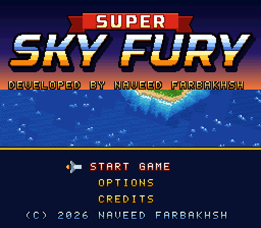
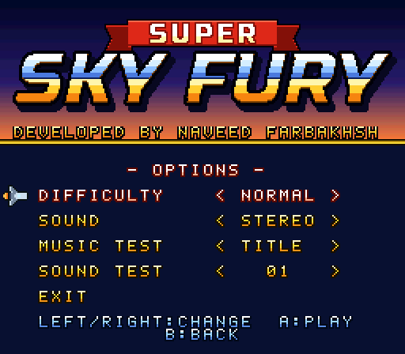

▶ PLAY
Runs the real ROM in the snes9x core (EmulatorJS). Headphones recommended, because the sound is mixed for wide stereo. On phones, on-screen controls appear automatically. Use the emulator menu (bottom bar) for fullscreen, volume, save states, and key remapping.
🎮 CONTROLS
| ACTION | SNES | KEYBOARD | GAMEPAD (XBOX LAYOUT) |
|---|---|---|---|
| Open menu / pause | START | Enter | Menu / Start |
| Turn, climb, dive / menu cursor | D-pad | ← → ↑ ↓ | D-pad |
| Guns (hold) | Y | S | Y |
| Heat-seeking missile / menu confirm | A | Z | A |
| Afterburner / menu back | B | X | B |
| Charge shot (hold, release to fire a piercing blast) | X | A | X |
| Hard bank left / right | L / R | Q / E | LB / RB |
| Barrel roll (dodges bullets) | double-tap L or R | double-tap Q or E | double-tap LB or RB |
| Change camera view | SELECT | V | View / Back |
Gamepad buttons map by letter (Xbox A = SNES A, and so on). Keys can be remapped in the emulator's Controls menu.
🖼 SCREENSHOTS





✦ FEATURES
- Three camera views: chase, cockpit with working instruments, and overhead, using per-scanline Mode 7 perspective.
- Real combat: twin cannons, lock-on missiles, an afterburner, hard banking, and enemies that shoot back.
- Four stages: ocean, desert, arctic, and a night raid, each with its own ground and sky, plus a sky fortress mid-boss.
- Power-ups and combos: a spread gun that levels up to LV3, rapid missiles, shields, and a kill combo multiplier.
- New in v1.4: a barrel roll that dodges bullets, a charge shot that pierces enemies, graze bonuses for near misses, a rank (S/A/B/C) after each stage, ground targets that blow up and leave smoke columns, shockwave rings, muzzle flashes, shimmering water, a sunset desert, a glowing night city, and a boss with upswept shoulder pads.
- Hits you can feel: sparks, flashes, hit-stop, floating damage numbers, and a boss bar that shows every hit.
- Sprite-stacked 3D sprites: voxel-model jets, enemies, and ground targets drawn at 16 headings and streamed to VRAM.
- Giant boss: weak points, three attack phases, and its own theme.
- Stereo sound: an original 16-bit score with hard-panned, moving SFX on a custom SPC700 driver, plus a mono option.
- Three difficulties: EASY with 7 lives, NORMAL with 5, HARD with 3, each changing boss health and enemy fire rate.
- Real hardware: 60 fps, 1 MB LoROM/FastROM, no extra chips. Works on flash carts and accurate emulators.